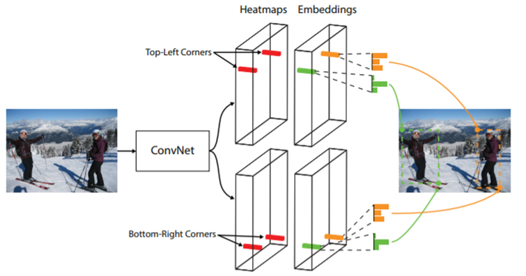
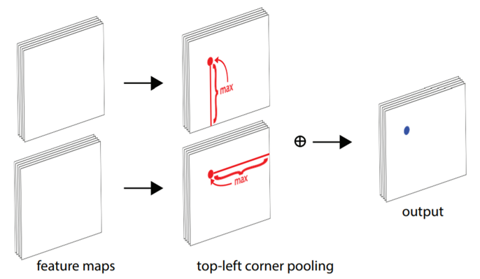
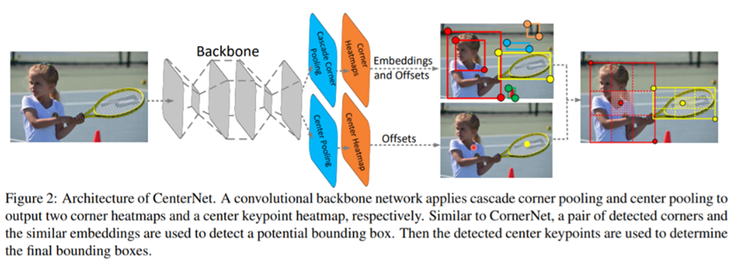
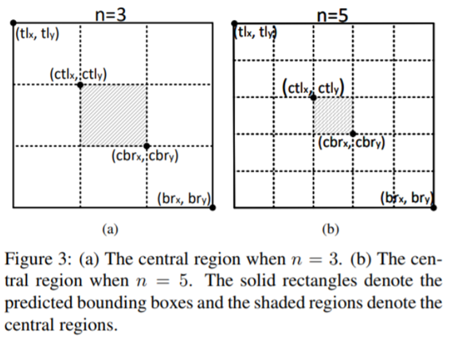
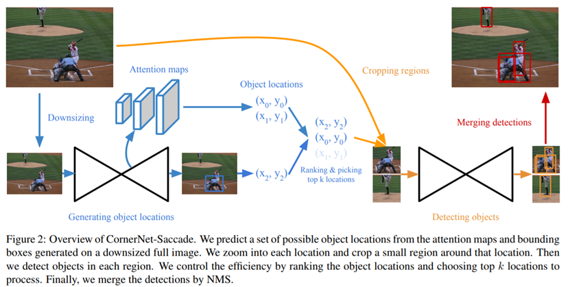
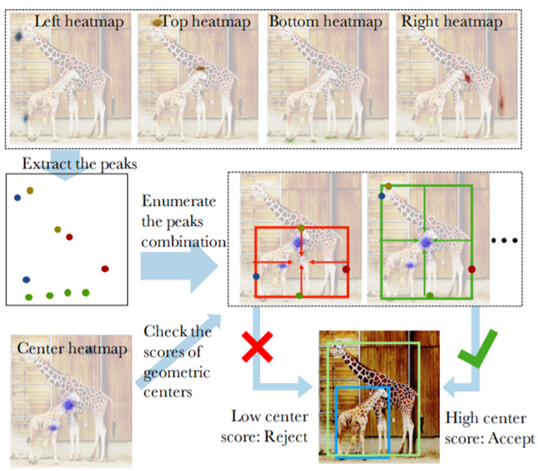
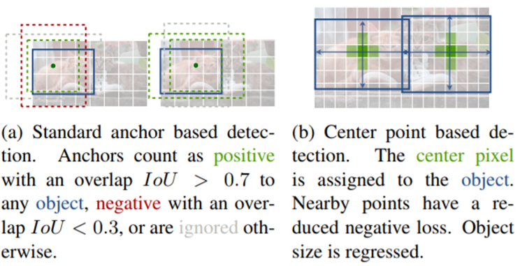

1、 CornerNet: Detecting Objects as Paired Keypoints ECCV2018
1.1 Motivation
现有检测方法通常需要一组非常大的anchor boxes，这在正负样本之间造成了巨大的不平衡，减慢了训练速度。
anchor boxes的使用引入了许多超参数和设计选择，包括多少个box，大小和宽高比。
1.2 Contribution
CornerNet，一种新的one stage目标检测方法，可以消除anchor boxes。
1.3 CornerNet

本文将一个目标物体检测为一对关键点——边界框的左上角和右下角。 本文使用单个卷积网络来预测同一物体类别的所有实例的左上角的热图，所有右下角的热图，以及每个检测到的角点的嵌入向量。 嵌入用于对属于同一目标的一对角点进行分组——训练网络以预测它们的类似嵌入。 该方法极大地简化了网络的输出，并且无需设计anchor boxes。
1.4 Corner pooling

Corner pooling是一种新型的池化层，可帮助卷积网络更好地定位边界框的角点。 边界框的一角通常在目标之外，参考圆形的情况。在这种情况下，角点不能根据当前的信息进行定位。相反，为了确定像素位置是否有左上角，需要水平地向右看目标的最上面边界，垂直地向底部看物体的最左边边界。 这激发了本文的corner pooling layer：它包含两个特征图; 在每个像素位置，它最大池化从第一个特征映射到右侧的所有特征向量，最大池化从第二个特征映射下面的所有特征向量，然后将两个池化结果一起添加。
2、 CenterNet Keypoint Triplets for Object Detection CVPR2019
2.1 motivation
目标检测中，基于关键点的方法经常出现大量不正确的边界框，主要是由于缺乏对相关剪裁区域的额外监督造成的。
2.2 contribution
如果预测的边界框与ground truth有较高的IoU,则中心关键点预测出相同类别的概率要高，反之亦然。因此提出在进行inference时，当通过一组关键点产生了一个边界框，我们继续观察是否具有同类别的一个关键点落入区域的中心，即使用三个点表示目标。
2.3 Object Detection as Keypoint Triplets

网络分为两部分，cascade corner pooling & center pooling
2.3.1 cascade corner pooling：
增加原始的corner pooling感知内部信息的功能。结合了feature map中目标物内部及边界方向的响应值和的最大值来预测角点。
2.3.2 center pooling：
用于预测中心关键点的分支，有利于中心获得更多目标物的中心区域，进而更易感知proposal的中心区域。通过取中心位置横向与纵向响应值的和的最大值实现此方法。
2.3.3 process：
（1）根据其分数选择前k个关键点。
（2）根据对应的偏移量将center keypoint remap至输入图中。
（3）为每一个边界框定义一个中心区域（如下图所示），并确保中心区域存在中心关键点，同时，保证该点的类别要与边界框的类别一致。如果中心区域检测到了中心关键点，则用左上角，右下角及中心点的分数的平均值更新边界框的分数，并保存该边界框。如果未检测到中心点，则移除该边界框。

3、 CornerNet-Lite: Efficient Keypoint Based Object Detection ArXiv 2019
3.1 motivation：
CnornerNet无法达到实时监测的要求，难以同时保障准确性和检测速度
3.2 contribution
提出了两种算法CornerNet-Saccade（高准确率优先）和CornerNet-Squeeze（高实时性优先）
3.2 CornerNet-Saccade

CornerNet-Saccade通过减少像素的个数来加速前向速度，使用注意力机制，首先缩小一幅图像，产生一个attention map，再进行放大和后续处理，原始的CornerNet在多个尺度上进行全卷积操作，而CornerNet-Saccade选取若干个分辨率的裁剪区域来检测，在COCO数据集上达到43.2的AP，速度是190ms一张图片，相比于原来速度提升了6倍。
3.3 CornerNet-Squeeze
CornerNet-Squeeze 减少每个像素点上需要处理的步骤来加速前向，它融合了SqueezeNet 和MobileNet 的思想，引入了一个紧凑的主干网络，这个主干网络中大量使用了 1×1的卷积，bottleneck层，以及深度可分离卷积。有了新的主干网络，CornerNet-Squeeze 在 COCO上的AP是34.4，速度是30ms每张图片。
4、 Bottom-up Object Detection by Grouping Extreme and Center Points arxiv2019
4.1 motivation
针对CornerNet误检的缺陷
4.2 contribution

对于一个组合（左、右、上、下四个点），计算其中心点的位置。如果在heatmap上，中心点对应的的分数高于阈值，则认为存在目标，其分数为五个点的平均值。
4.3 problems
（1）速度慢，需要检测的点更多了（每类都要上下左右中）
（2）需要标注extreme point，不过可以通过coco的segmentation得到
（3）比Cornernet没有明显提升
5、 Objects as Points CVPR2019
5.1 motivation
传统使用anchor的检测方法的缺陷
5.2 contribution

论文通过目标中心点来呈现目标，然后在中心点位置回归出目标bounding box的尺寸大小。 因此将目标检测问题变成了一个标准的关键点估计问题。我们仅仅将图像传入全卷积网络，得到一个热力图，热力图峰值点即中心点，每个特征图的峰值点位置预测了目标的宽高信息。模型训练采用标准的监督学习，推理仅仅是单个前向传播网络，不存在NMS这类后处理。